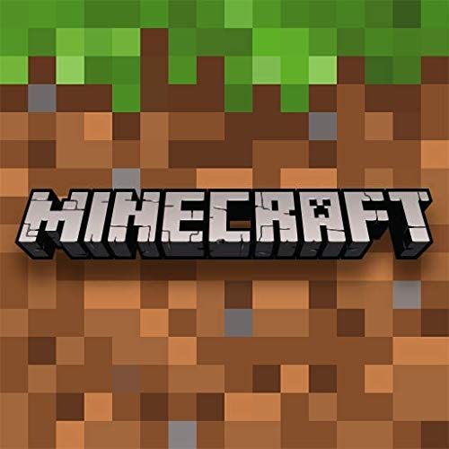

Hello! My name is Francis Gabriel Cellona. I am a first-year BSCS student at Bicol University. I am 18 years old and I am a music lover who enjoys different kinds of music. I am also a huge gamer who plays a big variety of games.
My day is usually just me either staying at home gaming, watching anime or listening to music. On the other hand, when I'm outside I'm usually listening to music whilst taking a stroll or a walk.
| Subject | Day | Time |
|---|---|---|
| CS 101: Introduction to Computing | Wednesday | 9:00am-11:00am |
| Computer Programming | Monday & Wednesday | 4:00pm-6:30pm |
| Physics for Computing | Tuesday & Thursday | 1:00pm-2:00pm |
| Mathematical Analysis | Tuesday, Thursday & Friday | 2:30pm-3:30pm, 1:00pm-2:30pm |
| Understanding the Self | Friday | 9:00am-11:30am |
| Movement Competency Training | Saturday | 4:00pm-7:00pm |
| ROTC | Sunday | 7:00am-11:00am |
I chose Computer Science as it was somewhat aligned to what I wanted to learn, which was to learn how to see digital footprints and other related topics.
Here are some of my favorite games:

I hope to learn about digital footprints and be able to use it.
I learnt that the more effort you put in, the better the webpage will look.